<?xml version="1.0" encoding="UTF-8"?><rss version="2.0"
	xmlns:content="http://purl.org/rss/1.0/modules/content/"
	xmlns:wfw="http://wellformedweb.org/CommentAPI/"
	xmlns:dc="http://purl.org/dc/elements/1.1/"
	xmlns:atom="http://www.w3.org/2005/Atom"
	xmlns:sy="http://purl.org/rss/1.0/modules/syndication/"
	xmlns:slash="http://purl.org/rss/1.0/modules/slash/"
	>

<channel>
	<title>Paolo Cammardella &#8211; IRESI at Maynooth University</title>
	<atom:link href="https://www.iresi.eu/author/paolocammardella/feed/" rel="self" type="application/rss+xml" />
	<link>https://www.iresi.eu</link>
	<description>International Renewable Energy Systems Integration Research Group</description>
	<lastBuildDate>Sat, 01 Feb 2025 17:38:43 +0000</lastBuildDate>
	<language>en-US</language>
	<sy:updatePeriod>
	hourly	</sy:updatePeriod>
	<sy:updateFrequency>
	1	</sy:updateFrequency>
	<generator>https://wordpress.org/?v=7.0</generator>

<image>
	<url>../../../wp-content/uploads/2023/09/International_Renewable___Energy_Systems_Integration_Research_Group-removebg-preview-1.png</url>
	<title>Paolo Cammardella &#8211; IRESI at Maynooth University</title>
	<link>https://www.iresi.eu</link>
	<width>32</width>
	<height>32</height>
</image> 
	<item>
		<title>🌍 Join Us for an Insightful Seminar on Energy Transition! 🌱</title>
		<link>https://www.iresi.eu/%f0%9f%8c%8d-join-us-for-an-insightful-seminar-on-energy-transition-%f0%9f%8c%b1/</link>
		
		<dc:creator><![CDATA[Paolo Cammardella]]></dc:creator>
		<pubDate>Sat, 01 Feb 2025 17:35:22 +0000</pubDate>
				<category><![CDATA[Senza categoria]]></category>
		<guid isPermaLink="false">https://www.iresi.eu/?p=1718</guid>

					<description><![CDATA[We are excited to invite you to &#8220;Carbon Emissions in EU: A Decomposition &#38; Decoupling Analysis&#8221; seminar, hosted by STREACS in collaboration with International Renewables and Energy Systems Integration (IRESI) and Maynooth University, Ireland. 📅 Date: February 12⏰ Time: 5:00 PM &#8211; 6:00 PM GMT+4📍 Location: Online 🔍 Key Speaker:Dr. Vincenzo Bianco, Professor of Energy &#38; Thermal Sciences at the University of Naples Parthenope, will share his expertise on [&#8230;]]]></description>
										<content:encoded><![CDATA[
<p class="wp-block-paragraph">We are excited to invite you to <strong>&#8220;Carbon Emissions in EU: A Decomposition &amp; Decoupling Analysis&#8221;</strong> seminar, hosted by <strong>STREACS</strong> in collaboration with <strong>International Renewables and Energy Systems Integration (IRESI)</strong> and <strong>Maynooth University, Ireland</strong>.</p>


<p class="wp-block-paragraph"> <strong>Date:</strong> February 12<br> <strong>Time:</strong> 5:00 PM &#8211; 6:00 PM GMT+4<br> <strong>Location:</strong> Online</p>


<p class="wp-block-paragraph"> <strong>Key Speaker:</strong><br>Dr. Vincenzo Bianco, Professor of Energy &amp; Thermal Sciences at the University of Naples Parthenope, will share his expertise on the critical topic of carbon emissions and energy transition.</p>


<p class="wp-block-paragraph">This seminar is a fantastic opportunity to gain valuable insights into the latest research and strategies for strengthening the energy transition. Whether you&#8217;re a professional in the field, a student, or simply passionate about sustainability, this event is for you!</p>


<p class="wp-block-paragraph">  <strong>Register here:</strong> <a href="https://docs.google.com/forms/d/e/1FAIpQLScrj24O5x8l7HKqhreRr7PM2LGvmvZAaRwKE3LgsSIfmKQ0Rg/viewform">registration form</a></p>


<p class="wp-block-paragraph">Don&#8217;t miss out on this chance to be part of an important conversation about our planet&#8217;s future. Let&#8217;s work together towards a sustainable energy future!</p>


<figure class="wp-block-image size-large">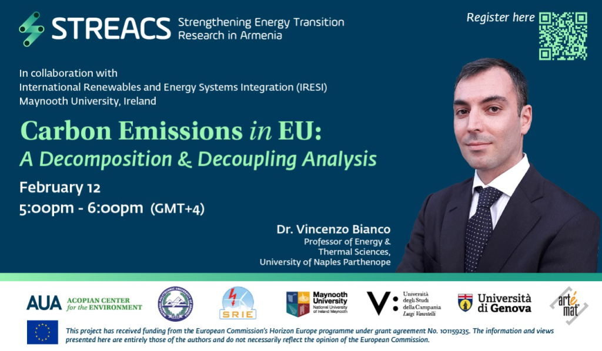</figure>


<p class="wp-block-paragraph">#EnergyTransition #Sustainability #CarbonEmissions #ClimateAction #RenewableEnergy #EUResearch #GreenFuture #STREACS #IRESI #MaynoothUniversity #HorizonEurope</p>


<p class="wp-block-paragraph"></p>
]]></content:encoded>
					
		
		
			</item>
		<item>
		<title>🌍 Exciting times ahead for energy system integration! 🌍</title>
		<link>https://www.iresi.eu/%f0%9f%8c%8d-exciting-times-ahead-for-energy-system-integration-%f0%9f%8c%8d/</link>
		
		<dc:creator><![CDATA[Paolo Cammardella]]></dc:creator>
		<pubDate>Sat, 01 Feb 2025 17:27:59 +0000</pubDate>
				<category><![CDATA[Senza categoria]]></category>
		<guid isPermaLink="false">https://www.iresi.eu/?p=1715</guid>

					<description><![CDATA[Exciting times indeed!Thrilled to see IRESI Group actively contributing to the future of energy system integration at Enlit Europe. The roundtable on semantic interoperability is a crucial step toward setting standards in IoT, data communication, and data spaces across Europe. Collaboration like this is key to driving a unified and sustainable energy system for the [&#8230;]]]></description>
										<content:encoded><![CDATA[
<p class="wp-block-paragraph">Exciting times indeed!<br>Thrilled to see IRESI Group actively contributing to the future of energy system integration at <a href="https://www.linkedin.com/company/enlit-europe/">Enlit Europe</a>. The roundtable on semantic interoperability is a crucial step toward setting standards in IoT, data communication, and data spaces across Europe.</p>


<p class="wp-block-paragraph"><br>Collaboration like this is key to driving a unified and sustainable energy system for the future, and it&#8217;s inspiring to see our work alongside key European projects and the EU Commission. Proud to be part of a team leading this important transformation! </p>


<p class="wp-block-paragraph"><br><a href="https://www.linkedin.com/search/results/all/?keywords=%23energysystemintegration&amp;origin=HASH_TAG_FROM_FEED">#EnergySystemIntegration</a> <a href="https://www.linkedin.com/search/results/all/?keywords=%23interoperability&amp;origin=HASH_TAG_FROM_FEED">#Interoperability</a> <a href="https://www.linkedin.com/search/results/all/?keywords=%23iot&amp;origin=HASH_TAG_FROM_FEED">#IoT</a> <a href="https://www.linkedin.com/search/results/all/?keywords=%23dataspaces&amp;origin=HASH_TAG_FROM_FEED">#DataSpaces</a> <a href="https://www.linkedin.com/search/results/all/?keywords=%23sustainability&amp;origin=HASH_TAG_FROM_FEED">#Sustainability</a> <a href="https://www.linkedin.com/search/results/all/?keywords=%23europeanprojects&amp;origin=HASH_TAG_FROM_FEED">#EuropeanProjects</a> <a href="https://www.linkedin.com/search/results/all/?keywords=%23eucommission&amp;origin=HASH_TAG_FROM_FEED">hashtag#EUCommission</a> <a href="https://www.linkedin.com/search/results/all/?keywords=%23iresigroup&amp;origin=HASH_TAG_FROM_FEED">#IRESIGroup</a></p>


<figure class="wp-block-image size-full">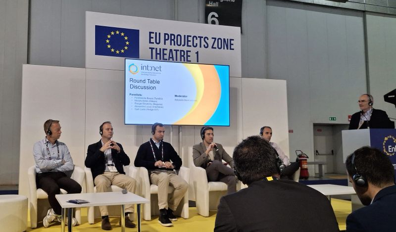</figure>
]]></content:encoded>
					
		
		
			</item>
		<item>
		<title>🌟 Renew Team Represented at Discovery Exchange Event! 🌟</title>
		<link>https://www.iresi.eu/%f0%9f%8c%9f-renew-team-represented-at-discovery-exchange-event-%f0%9f%8c%9f/</link>
		
		<dc:creator><![CDATA[Paolo Cammardella]]></dc:creator>
		<pubDate>Sat, 01 Feb 2025 17:25:00 +0000</pubDate>
				<category><![CDATA[Senza categoria]]></category>
		<guid isPermaLink="false">https://www.iresi.eu/?p=1709</guid>

					<description><![CDATA[We&#8217;re excited to share that RENEWchallenge project was proudly represented by Nicky Dawkins, IRESI Lab Manager, and Carrie Anne Barry, COER Center Manager—both from Maynooth University—at the recent Discovery Exchange event hosted by Skillnet Innovation Exchange and Research Ireland.As members of the RENEWchallenge team, Nicky and Carrie joined this initiative, which encourages industries to collaborate [&#8230;]]]></description>
										<content:encoded><![CDATA[
<p class="wp-block-paragraph">We&#8217;re excited to share that <a href="https://www.linkedin.com/company/renewchallenge/">RENEWchallenge</a> project was proudly represented by <a href="https://www.linkedin.com/in/ACoAADXj68wBRW1F7PhB8rwSdVvpriY0pa_uH7g"></a><a href="https://www.linkedin.com/in/nicky-dawkins-0b895b212/">Nicky Dawkins</a>, IRESI Lab Manager, and <a href="https://www.linkedin.com/in/ACoAAANXHBUBU4EHK4GFahB4KFVeJnxNx2gJcgM"></a><a href="https://www.linkedin.com/in/carrie-anne-barry-9b192616/">Carrie Anne Barry</a>, COER Center Manager—both from <a href="https://www.linkedin.com/company/maynooth-university/">Maynooth University</a>—at the recent Discovery Exchange event hosted by <a href="https://www.linkedin.com/company/the-innovation-exchange/">Skillnet Innovation Exchange</a> and <a href="https://www.linkedin.com/company/research-ireland/">Research Ireland</a>.<br>As members of the <a href="https://www.linkedin.com/company/renewchallenge/">RENEWchallenge</a> team, Nicky and Carrie joined this initiative, which encourages industries to collaborate with research teams and explore new possibilities for innovation in the energy sector.</p>


<p class="wp-block-paragraph">The <a href="https://www.linkedin.com/company/renew/">ReNew</a> project continues to drive energy innovation, and this event was a fantastic opportunity to foster research-industry partnerships and stakeholder engagement for a sustainable future . <br><a href="https://www.linkedin.com/search/results/all/?keywords=%23energyinnovation&amp;origin=HASH_TAG_FROM_FEED">#EnergyInnovation</a> <a href="https://www.linkedin.com/search/results/all/?keywords=%23researchcollaboration&amp;origin=HASH_TAG_FROM_FEED">#ResearchCollaboration</a> <a href="https://www.linkedin.com/search/results/all/?keywords=%23skillnet&amp;origin=HASH_TAG_FROM_FEED">#Skillnet</a> <a href="https://www.linkedin.com/search/results/all/?keywords=%23researchireland&amp;origin=HASH_TAG_FROM_FEED">#ResearchIreland</a> <a href="https://www.linkedin.com/search/results/all/?keywords=%23renewproject&amp;origin=HASH_TAG_FROM_FEED">#RenewProject</a> <a href="https://www.linkedin.com/search/results/all/?keywords=%23maynoothuniversity&amp;origin=HASH_TAG_FROM_FEED">#MaynoothUniversity</a> <a href="https://www.linkedin.com/search/results/all/?keywords=%23innovationforsustainability&amp;origin=HASH_TAG_FROM_FEED">#InnovationForSustainability</a> <a href="https://www.linkedin.com/company/school-of-business-maynooth-university/">School of Business Maynooth University</a></p>


<figure class="wp-block-gallery has-nested-images columns-default is-cropped wp-block-gallery-1 is-layout-flex wp-block-gallery-is-layout-flex">
<figure class="wp-block-image size-large">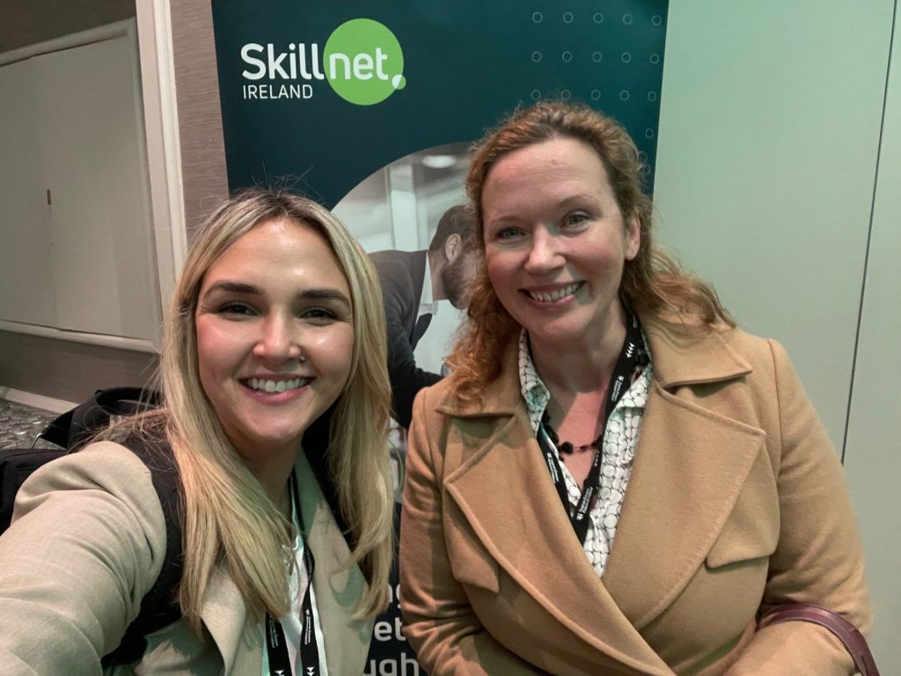</figure>


<figure class="wp-block-image size-large">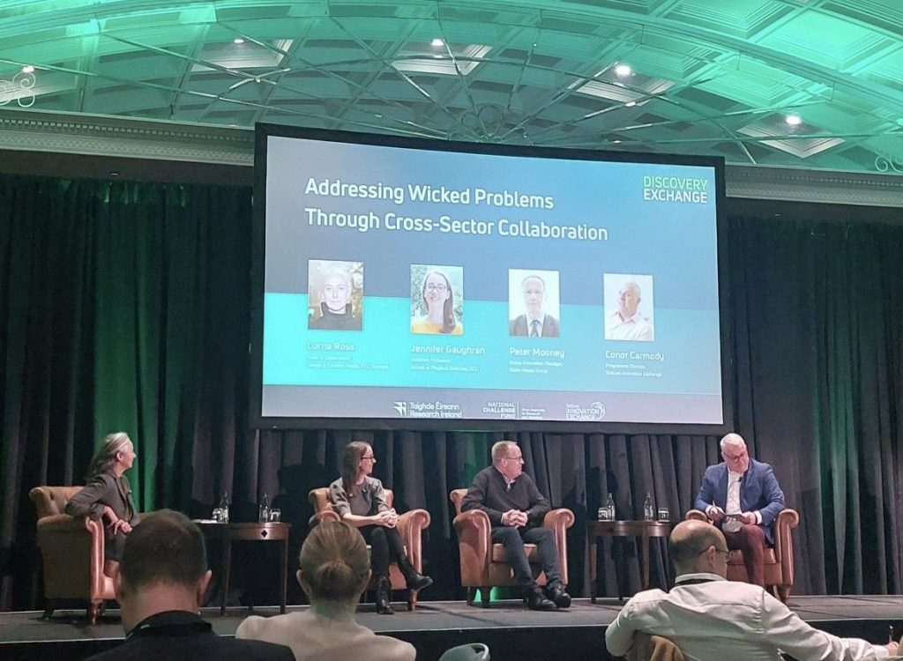</figure>


<figure class="wp-block-image size-large">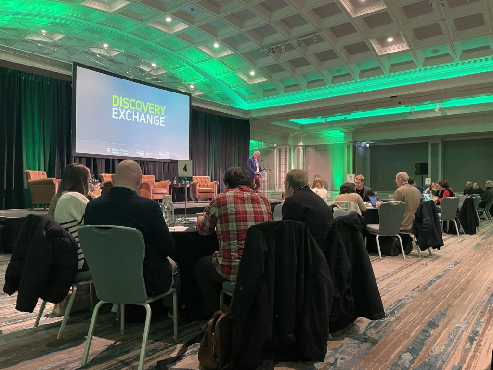</figure>


<figure class="wp-block-image size-large">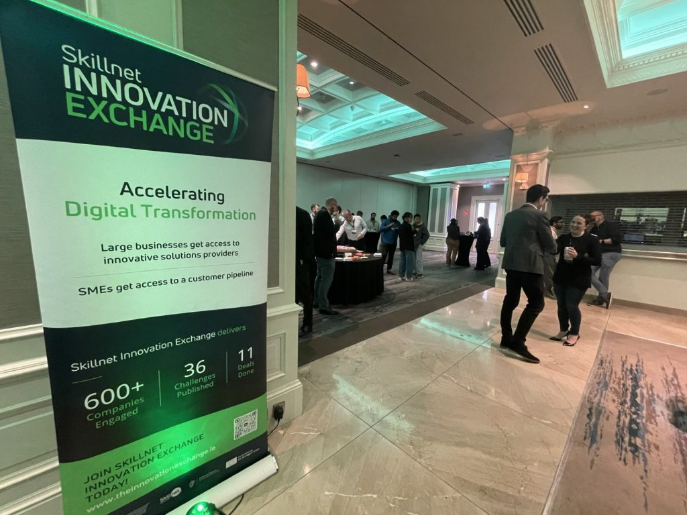</figure>
</figure>
]]></content:encoded>
					
		
		
			</item>
		<item>
		<title>Celebrating Science Night at Maynooth University!</title>
		<link>https://www.iresi.eu/celebrating-science-night-at-maynooth-university/</link>
		
		<dc:creator><![CDATA[Paolo Cammardella]]></dc:creator>
		<pubDate>Sat, 01 Feb 2025 17:21:18 +0000</pubDate>
				<category><![CDATA[Senza categoria]]></category>
		<guid isPermaLink="false">https://www.iresi.eu/?p=1703</guid>

					<description><![CDATA[The IRESI Group and School of Business Maynooth University staff and students were delighted to host a stand for Science Night organised by Maynooth University on November 15th. It was a fantastic evening dedicated to inspiring future generations about the wonders of science and their potential to shape a sustainable future. At our stand, we [&#8230;]]]></description>
										<content:encoded><![CDATA[
<p class="wp-block-paragraph">The IRESI Group and <a href="https://www.linkedin.com/company/school-of-business-maynooth-university/">School of Business Maynooth University</a> staff and students were delighted to host a stand for Science Night organised by <a href="https://www.linkedin.com/company/maynooth-university/">Maynooth University</a> on November 15th. It was a fantastic evening dedicated to inspiring future generations about the wonders of science and their potential to shape a sustainable future.</p>


<p class="wp-block-paragraph">At our stand, we focused on renewable energy and its vital role in achieving net-zero carbon emissions. Through hands-on activities and engaging discussions, we aimed to empower families with the knowledge that their actions can make a real difference in combating climate change and building a greener planet. <br>A big thank you to <a href="https://www.linkedin.com/company/maynooth-university/">Maynooth University</a> for organizing such an impactful event and to all the young minds who visited us, brimming with curiosity and enthusiasm! <br>Let’s keep inspiring and innovating for a brighter, more sustainable future<br><a href="https://www.linkedin.com/company/school-of-business-maynooth-university/">School of Business Maynooth University</a>, <a href="https://www.linkedin.com/company/renewchallenge/">RENEWchallenge</a>, <a href="https://www.linkedin.com/in/ACoAAAYA-RABeoAbMn3ZKV0jti4R6AGiaahsaeo"></a><a href="https://www.linkedin.com/in/fabianopallonetto/">Fabiano Pallonetto</a> <a href="https://www.linkedin.com/in/ACoAABlgaosB0mA9XNZC0_FYePEjqy5sxnVWzjM"></a><a href="https://www.linkedin.com/in/amy-fahy-7236baba/">Amy Fahy</a> <a href="https://www.linkedin.com/in/ACoAAANXHBUBU4EHK4GFahB4KFVeJnxNx2gJcgM"></a><a href="https://www.linkedin.com/in/carrie-anne-barry-9b192616/">Carrie Anne Barry</a> <a href="https://www.linkedin.com/in/ACoAADXj68wBRW1F7PhB8rwSdVvpriY0pa_uH7g"></a><a href="https://www.linkedin.com/in/nicky-dawkins-0b895b212/">Nicky Dawkins</a> <a href="https://www.linkedin.com/in/ACoAADorQbwBzOcUq7N4plyph6E6l0vBmUHOLfA"></a><a href="https://www.linkedin.com/in/annalisa-bringiotti-8509b8232/">Annalisa Bringiotti</a> <a href="https://www.linkedin.com/in/ACoAAEbbK0ABQRJ16z4A6CAFE3b-3Odp7n8p9pk"></a><a href="https://www.linkedin.com/in/pietro-luigi-desole-940148292/">Pietro Luigi Desole</a> <a href="https://www.linkedin.com/in/ACoAAE205eMB7Dq-iSSrqghGz9wouLXj59c9Coo"></a><a href="https://www.linkedin.com/in/christina-barry-6ab734304/">Christina Barry</a><br><a href="https://www.linkedin.com/search/results/all/?keywords=%23scienceforfuture&amp;origin=HASH_TAG_FROM_FEED">#ScienceForFuture</a> <a href="https://www.linkedin.com/search/results/all/?keywords=%23renewableenergy&amp;origin=HASH_TAG_FROM_FEED">#RenewableEnergy</a> <a href="https://www.linkedin.com/search/results/all/?keywords=%23netzero&amp;origin=HASH_TAG_FROM_FEED">#NetZero</a> <a href="https://www.linkedin.com/search/results/all/?keywords=%23sustainability&amp;origin=HASH_TAG_FROM_FEED">#Sustainability</a> <a href="https://www.linkedin.com/search/results/all/?keywords=%23stemeducation&amp;origin=HASH_TAG_FROM_FEED">#STEMEducation</a> <a href="https://www.linkedin.com/search/results/all/?keywords=%23iresi&amp;origin=HASH_TAG_FROM_FEED">#IRESI</a></p>


<figure class="wp-block-gallery has-nested-images columns-default is-cropped wp-block-gallery-2 is-layout-flex wp-block-gallery-is-layout-flex">
<figure class="wp-block-image size-large">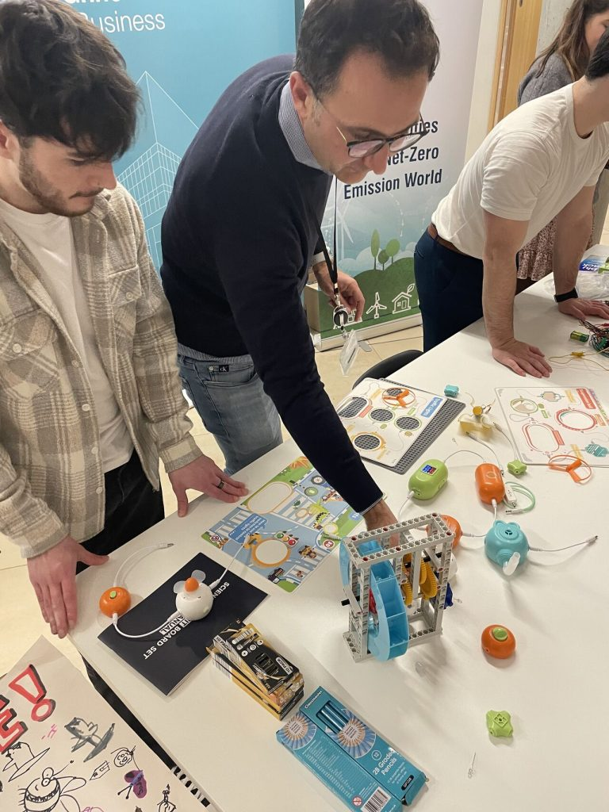</figure>


<figure class="wp-block-image size-large"></figure>


<figure class="wp-block-image size-large"></figure>


<figure class="wp-block-image size-large"></figure>
</figure>
]]></content:encoded>
					
		
		
			</item>
		<item>
		<title>Fostering Creativity and Collaboration at Maynooth University!</title>
		<link>https://www.iresi.eu/fostering-creativity-and-collaboration-at-maynooth-university/</link>
		
		<dc:creator><![CDATA[Paolo Cammardella]]></dc:creator>
		<pubDate>Sat, 01 Feb 2025 17:17:35 +0000</pubDate>
				<category><![CDATA[Senza categoria]]></category>
		<guid isPermaLink="false">https://www.iresi.eu/?p=1694</guid>

					<description><![CDATA[We’re thrilled to share that our Vice Director, Amy Fahy, Director Fabiano Pallonetto, and Lab Manager Nicky Dawkins of the IRESI Group, recently hosted an engaging workshop at School of Business Maynooth University as part of the Creative Ireland Maynooth Climate Lab project. This session was focused on co-creation to drive innovative solutions for climate [&#8230;]]]></description>
										<content:encoded><![CDATA[
<p class="wp-block-paragraph">We’re thrilled to share that our Vice Director, <a href="https://www.linkedin.com/in/ACoAABlgaosB0mA9XNZC0_FYePEjqy5sxnVWzjM"></a><a href="https://www.linkedin.com/in/amy-fahy-7236baba/">Amy Fahy</a>, Director <a href="https://www.linkedin.com/in/ACoAAAYA-RABeoAbMn3ZKV0jti4R6AGiaahsaeo"></a><a href="https://www.linkedin.com/in/fabianopallonetto/">Fabiano Pallonetto</a>, and Lab Manager <a href="https://www.linkedin.com/in/ACoAADXj68wBRW1F7PhB8rwSdVvpriY0pa_uH7g"></a><a href="https://www.linkedin.com/in/nicky-dawkins-0b895b212/">Nicky Dawkins</a> of the IRESI Group, recently hosted an engaging workshop at <a href="https://www.linkedin.com/company/school-of-business-maynooth-university/">School of Business Maynooth University</a> as part of the <a href="https://www.linkedin.com/company/creative-ireland/">Creative Ireland</a> Maynooth Climate Lab project. This session was focused on co-creation to drive innovative solutions for climate challenges.</p>


<p class="wp-block-paragraph">Special thanks to <a href="https://www.linkedin.com/in/ACoAAE205eMB7Dq-iSSrqghGz9wouLXj59c9Coo"></a><a href="https://www.linkedin.com/in/christina-barry-6ab734304/">Christina Barry</a> and Philip O&#8217;Brien from the <a href="https://www.linkedin.com/company/creative-ireland/">Creative Ireland</a> project who shared their experiences of facilitating hands-on experiential learning workshops with local families, to explore concepts like sustainable energy, transport, circular economy, and biodiversity in a fun and interactive way.</p>


<p class="wp-block-paragraph">The day ended on a festive and interactive note with a gingerbread-making competition! This unique activity brought participants together, fostering teamwork and showcasing how creativity can inspire collaboration in meaningful ways. </p>


<p class="wp-block-paragraph">A heartfelt thank you to everyone who contributed to the success of this event. Your enthusiasm and ideas are driving forces in our mission for a more sustainable future.<br><a href="https://www.linkedin.com/in/ACoAADibMK4BKQN1sklyzMinPDkHlKiWyj0Lmgc"></a><a href="https://www.linkedin.com/in/muhammad-waseem-97a073226/">Muhammad Waseem</a> <a href="https://www.linkedin.com/in/ACoAABxTOEoBawJhTAvVmiPBIR0z-H6aZCXkHGQ"></a><a href="https://www.linkedin.com/in/adarshsunil/">Adarsh S</a><a href="https://www.linkedin.com/in/ACoAADorQbwBzOcUq7N4plyph6E6l0vBmUHOLfA"></a><a href="https://www.linkedin.com/in/annalisa-bringiotti-8509b8232/">Annalisa Bringiotti</a> <a href="https://www.linkedin.com/in/ACoAAEbbK0ABQRJ16z4A6CAFE3b-3Odp7n8p9pk"></a><a href="https://www.linkedin.com/in/pietro-luigi-desole-940148292/">Pietro Luigi Desole</a> <a href="https://www.linkedin.com/in/ACoAAAv1b88B_cqQSJeP-aB3mXHO0DT9syz_LwI"></a><a href="https://www.linkedin.com/in/paulaborourke/">Paula O&#8217;Rourke</a> <a href="https://www.linkedin.com/in/ACoAAE205eMB7Dq-iSSrqghGz9wouLXj59c9Coo"></a><a href="https://www.linkedin.com/in/christina-barry-6ab734304/">Christina Barry</a> <a href="https://www.linkedin.com/company/school-of-business-maynooth-university/">School of Business Maynooth University</a>, <a href="https://www.linkedin.com/company/maynooth-university/">Maynooth University</a>, <a href="https://www.linkedin.com/in/ACoAAAO47VMBs3az6U6pG83ummf6uZze4x27QWU"></a><a href="https://www.linkedin.com/in/john-ringwood-783ab818/">John Ringwood</a>, <a href="https://www.linkedin.com/in/ACoAAACxJWMB3KGcvfa-IlHZ3-2IQGts-7FYN28"></a><a href="https://www.linkedin.com/in/mark-mcgranaghan-517a7a3/">Mark McGranaghan</a>, <a href="https://www.linkedin.com/in/ACoAAARgR08BoGm6OWqLgzXqxC5Syq74zjRgXgU"></a><a href="https://www.linkedin.com/in/aaron-michael-o%E2%80%99grady-72770720/">Aaron Michael O’Grady</a>, <a href="https://www.linkedin.com/in/ACoAAAv1b88B_cqQSJeP-aB3mXHO0DT9syz_LwI"></a><a href="https://www.linkedin.com/in/paulaborourke/">Paula O&#8217;Rourke</a>, <a href="https://www.linkedin.com/in/ACoAACgyER4BY8x814Uf64cio8Iyk61PsuvDTzc"></a><a href="https://www.linkedin.com/in/mireia-guardino-ferran-392a18169/">Mireia Guardino-Ferran</a>, <a href="https://www.linkedin.com/company/creative-ireland/">Creative Ireland</a>, <a href="https://www.linkedin.com/company/kildare-county-council/">Kildare County Council</a>, <a href="https://www.linkedin.com/in/ACoAAAHy8z0BloZjJgyXwf84LMkxXp8uLxH17CI"></a><a href="https://www.linkedin.com/in/peter-hamilton-191b4ba/">Peter Hamilton</a>, <a href="https://www.linkedin.com/in/ACoAAAGeEKEBJMlf4cuMsPNAMtTet8N175Ovn20"></a><a href="https://www.linkedin.com/in/olanosullivan/">Olan O&#8217;Sullivan</a><br><a href="https://www.linkedin.com/search/results/all/?keywords=%23innovation&amp;origin=HASH_TAG_FROM_FEED">#Innovation</a> <a href="https://www.linkedin.com/search/results/all/?keywords=%23sustainability&amp;origin=HASH_TAG_FROM_FEED">#Sustainability</a> <a href="https://www.linkedin.com/search/results/all/?keywords=%23collaboration&amp;origin=HASH_TAG_FROM_FEED">#Collaboration</a> <a href="https://www.linkedin.com/search/results/all/?keywords=%23creativethinking&amp;origin=HASH_TAG_FROM_FEED">#CreativeThinking</a> <a href="https://www.linkedin.com/search/results/all/?keywords=%23leadership&amp;origin=HASH_TAG_FROM_FEED">#Leadership</a> <a href="https://www.linkedin.com/search/results/all/?keywords=%23maynoothuniversity&amp;origin=HASH_TAG_FROM_FEED">#MaynoothUniversity</a></p>


<figure class="wp-block-gallery has-nested-images columns-default is-cropped wp-block-gallery-3 is-layout-flex wp-block-gallery-is-layout-flex">
<figure class="wp-block-image size-large"></figure>


<figure class="wp-block-image size-large"></figure>


<figure class="wp-block-image size-large"></figure>


<figure class="wp-block-image size-large"></figure>


<figure class="wp-block-image size-large"></figure>


<figure class="wp-block-image size-large"></figure>
</figure>
]]></content:encoded>
					
		
		
			</item>
		<item>
		<title>Celebrating Sustainability and Stakeholder Engagement at the Kildare Business Awards!</title>
		<link>https://www.iresi.eu/celebrating-sustainability-and-stakeholder-engagement-at-the-kildare-business-awards/</link>
		
		<dc:creator><![CDATA[Paolo Cammardella]]></dc:creator>
		<pubDate>Sat, 01 Feb 2025 17:12:15 +0000</pubDate>
				<category><![CDATA[Senza categoria]]></category>
		<guid isPermaLink="false">https://www.iresi.eu/?p=1689</guid>

					<description><![CDATA[The IRESI group at School of Business Maynooth University was proud to represent the RENEWchallenge Project at the prestigious Kildare Business Awards, where we were nominated in the Decarbonization Category.The ReNew Project stands out for its dedication to stakeholder engagement, fostering collaboration to address critical challenges in energy transition and decarbonization. This recognition highlights the [&#8230;]]]></description>
										<content:encoded><![CDATA[
<p class="wp-block-paragraph">The IRESI group at <a href="https://www.linkedin.com/company/school-of-business-maynooth-university/">School of Business Maynooth University</a> was proud to represent the <a href="https://www.linkedin.com/company/renewchallenge/">RENEWchallenge</a> Project at the prestigious Kildare Business Awards, where we were nominated in the Decarbonization Category.<br>The <a href="https://www.linkedin.com/company/renew/">ReNew</a> Project stands out for its dedication to stakeholder engagement, fostering collaboration to address critical challenges in energy transition and decarbonization. This recognition highlights the collective efforts of our team and partners in building a more sustainable future.<br>We were delighted to have our leadership team in attendance, including our guest of honor <a href="https://www.linkedin.com/in/ACoAAAH_J5IBOphi57H7vhoil0pPed7BFol5QoI"></a><a href="https://www.linkedin.com/in/joseph-coughlan-016276b/">Joseph Coughlan</a> Head of School, <a href="https://www.linkedin.com/in/ACoAAAYA-RABeoAbMn3ZKV0jti4R6AGiaahsaeo"></a><a href="https://www.linkedin.com/in/fabianopallonetto/">Fabiano Pallonetto</a>, our Director, <a href="https://www.linkedin.com/in/ACoAABlgaosB0mA9XNZC0_FYePEjqy5sxnVWzjM"></a><a href="https://www.linkedin.com/in/amy-fahy-7236baba/">Amy Fahy</a>, our Vice Director, along with <a href="https://www.linkedin.com/in/ACoAADXj68wBRW1F7PhB8rwSdVvpriY0pa_uH7g"></a><a href="https://www.linkedin.com/in/nicky-dawkins-0b895b212/">Nicky Dawkins</a>, our Lab Manager, <a href="https://www.linkedin.com/in/ACoAAANXHBUBU4EHK4GFahB4KFVeJnxNx2gJcgM"></a><a href="https://www.linkedin.com/in/carrie-anne-barry-9b192616/">Carrie Anne Barry</a>, COER’s Lab Manager, <a href="https://www.linkedin.com/in/ACoAAAEKTJoB0nEyQMectssupSD-Zrk7RuI9y4c"></a><a href="https://www.linkedin.com/in/rebecca-doolin-78aa175/">Rebecca Doolin</a> Vice President external affairs, <a href="https://www.linkedin.com/in/ACoAAAJaiR8BgpC0AZgL3ITj0YaKn1Drk1xzwZU"></a><a href="https://www.linkedin.com/in/gjamieson/">Gordon Jamieson</a> Senior development manager, <a href="https://www.linkedin.com/in/ACoAAAGwgWMBgs5BXrL8YsttbjVMOksljx3Dbhs"></a><a href="https://www.linkedin.com/in/peter-mcnamara-2035ab9/">Peter McNamara</a> Dean of the Faculty of Social Science, &amp; Peter Conlon, Director of <a href="https://www.linkedin.com/company/maynoothworks/">MaynoothWorks</a><br>A heartfelt thank you to everyone who has supported this project, and congratulations to all the nominees and winners who are driving positive change in their fields. Here’s to continued collaboration and innovation for a greener tomorrow! <br><a href="https://www.linkedin.com/search/results/all/?keywords=%23sustainability&amp;origin=HASH_TAG_FROM_FEED">#Sustainability</a> <a href="https://www.linkedin.com/search/results/all/?keywords=%23stakeholderengagement&amp;origin=HASH_TAG_FROM_FEED">#StakeholderEngagement</a> <a href="https://www.linkedin.com/search/results/all/?keywords=%23decarbonization&amp;origin=HASH_TAG_FROM_FEED">#Decarbonization</a> <a href="https://www.linkedin.com/search/results/all/?keywords=%23innovation&amp;origin=HASH_TAG_FROM_FEED">#Innovation</a> <a href="https://www.linkedin.com/search/results/all/?keywords=%23kildarebusinessawards&amp;origin=HASH_TAG_FROM_FEED">#KildareBusinessAwards</a> <a href="https://www.linkedin.com/search/results/all/?keywords=%23renewproject&amp;origin=HASH_TAG_FROM_FEED">#RENEWProject</a> <a href="https://www.linkedin.com/search/results/all/?keywords=%23maynoothuniversity&amp;origin=HASH_TAG_FROM_FEED">#MaynoothUniversity</a></p>


<figure class="wp-block-gallery has-nested-images columns-default is-cropped wp-block-gallery-4 is-layout-flex wp-block-gallery-is-layout-flex">
<figure class="wp-block-image size-large">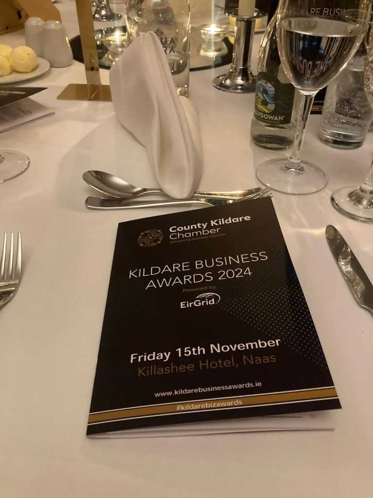</figure>


<figure class="wp-block-image size-large">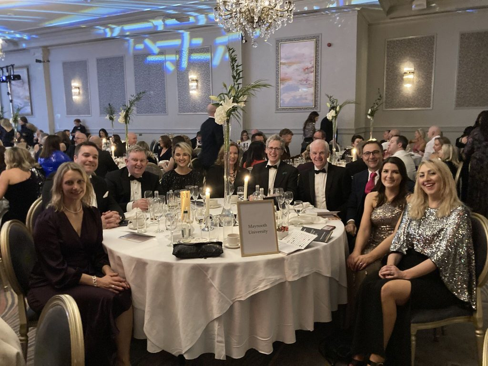</figure>


<figure class="wp-block-image size-large">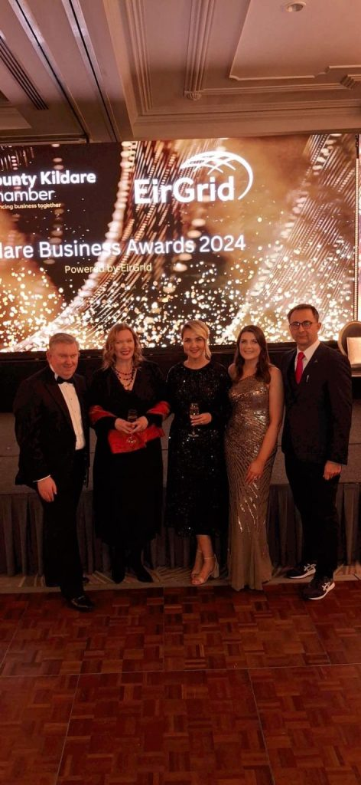</figure>
</figure>
]]></content:encoded>
					
		
		
			</item>
		<item>
		<title>Introducing the Concept of an Entrepreneurship Society!</title>
		<link>https://www.iresi.eu/introducing-the-concept-of-an-entrepreneurship-society/</link>
		
		<dc:creator><![CDATA[Paolo Cammardella]]></dc:creator>
		<pubDate>Sat, 01 Feb 2025 16:39:49 +0000</pubDate>
				<category><![CDATA[Senza categoria]]></category>
		<guid isPermaLink="false">https://www.iresi.eu/?p=1681</guid>

					<description><![CDATA[We are thrilled to share highlights from an event dedicated to fostering innovation, creativity, and business development through green technology! 🚀 Hosted by the IRESI Group, Electronic Engineering Hamilton Institute, MaynoothWorks , and the Biology Human Health Institute, this initiative brought together brilliant minds from diverse disciplines to inspire the next generation of business leaders.What [&#8230;]]]></description>
										<content:encoded><![CDATA[
<p class="wp-block-paragraph">We are thrilled to share highlights from an event dedicated to fostering innovation, creativity, and business development through green technology!  Hosted by the IRESI Group, Electronic Engineering Hamilton Institute, <a href="https://www.linkedin.com/company/maynoothworks/">MaynoothWorks </a>, and the Biology Human Health Institute, this initiative brought together brilliant minds from diverse disciplines to inspire the next generation of business leaders.<br>What is an Entrepreneurship Society?<br>This student-led organization is a powerhouse of opportunities, promoting:</p>


<ul class="wp-block-list">
<li>Innovation and Business Development through workshops, networking, and mentorship.</li>


<li>Engagement with Industry Experts via speaker sessions and competitions.</li>


<li>Access to Resources and Funding for turning creative ideas into reality.</li>
</ul>


<p class="wp-block-paragraph">By empowering students to take bold steps, we aim to shape the leaders of tomorrow while championing sustainability and green technology. <br>Stay tuned for more updates on this inspiring journey!  Let’s build a future where creativity meets impact.</p>


<p class="wp-block-paragraph">Special thanks to <a href="https://www.linkedin.com/in/ACoAACGHOU4BJ9OeKelXE6zscq9ACC_YJYPflx0"></a><a href="https://www.linkedin.com/in/aidan-o-driscoll-866472138/">Aidan O&#8217;Driscoll</a> founder of <a href="https://www.linkedin.com/company/alignconsultancyagency/">Align Consultancy &amp; Agency</a> and our guest speaker who inspired the students to push beyond any limitations they may face.<br><a href="https://www.linkedin.com/in/ACoAAAYA-RABeoAbMn3ZKV0jti4R6AGiaahsaeo"></a><a href="https://www.linkedin.com/in/fabianopallonetto/">Fabiano Pallonetto</a> <a href="https://www.linkedin.com/in/ACoAAACc9KABohU6uCq2M1uUnrmXHgCRQ2e_qwE"></a><a href="https://www.linkedin.com/in/gerrylacey/">Gerry Lacey</a> <a href="https://www.linkedin.com/in/ACoAABPeIgYBIF9hhBlWCLiZw0PkNpkg_TMrEOg"></a><a href="https://www.linkedin.com/in/shirley-o-dea-37276893/">Shirley O&#8217;Dea</a><br><a href="https://www.linkedin.com/search/results/all/?keywords=%23entrepreneurshipsociety&amp;origin=HASH_TAG_FROM_FEED">#EntrepreneurshipSociety</a> <a href="https://www.linkedin.com/search/results/all/?keywords=%23innovation&amp;origin=HASH_TAG_FROM_FEED">#Innovation</a> <a href="https://www.linkedin.com/search/results/all/?keywords=%23greentechnology&amp;origin=HASH_TAG_FROM_FEED">#GreenTechnology</a> <a href="https://www.linkedin.com/search/results/all/?keywords=%23leadership&amp;origin=HASH_TAG_FROM_FEED">#Leadership</a> <a href="https://www.linkedin.com/search/results/all/?keywords=%23businessdevelopment&amp;origin=HASH_TAG_FROM_FEED">#BusinessDevelopment</a> <a href="https://www.linkedin.com/search/results/all/?keywords=%23futureleaders&amp;origin=HASH_TAG_FROM_FEED">#FutureLeaders</a></p>


<figure class="wp-block-gallery has-nested-images columns-default is-cropped wp-block-gallery-5 is-layout-flex wp-block-gallery-is-layout-flex">
<figure class="wp-block-image size-large">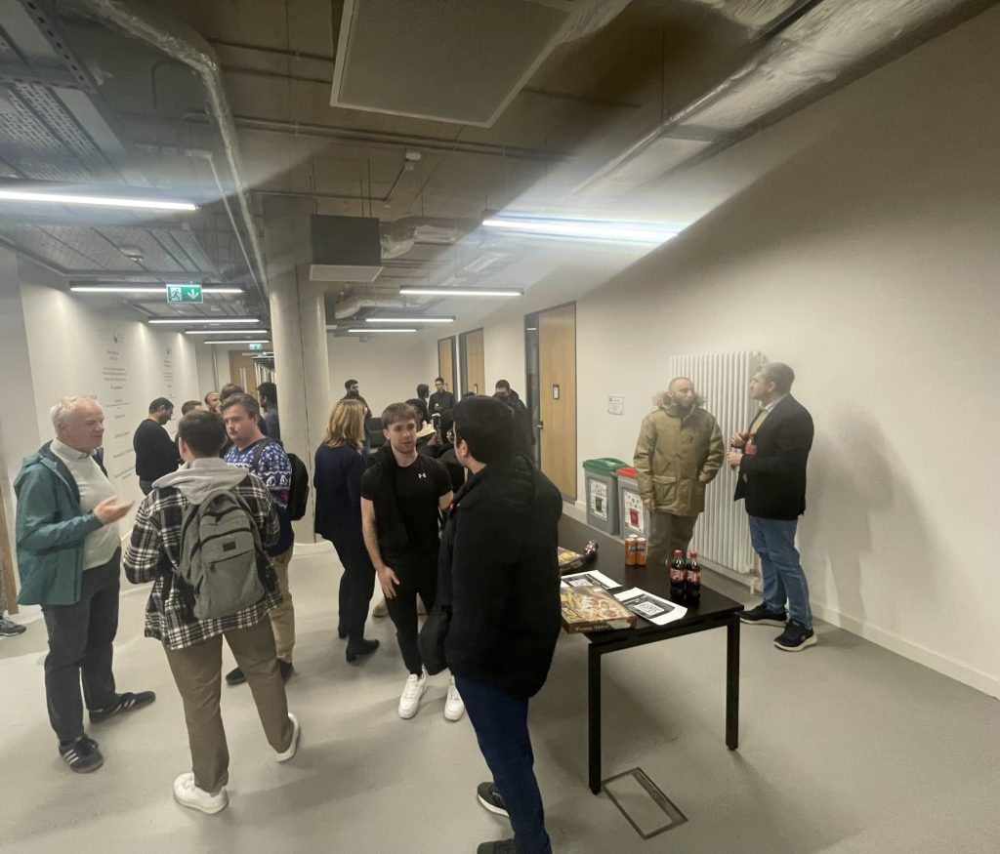</figure>


<figure class="wp-block-image size-large">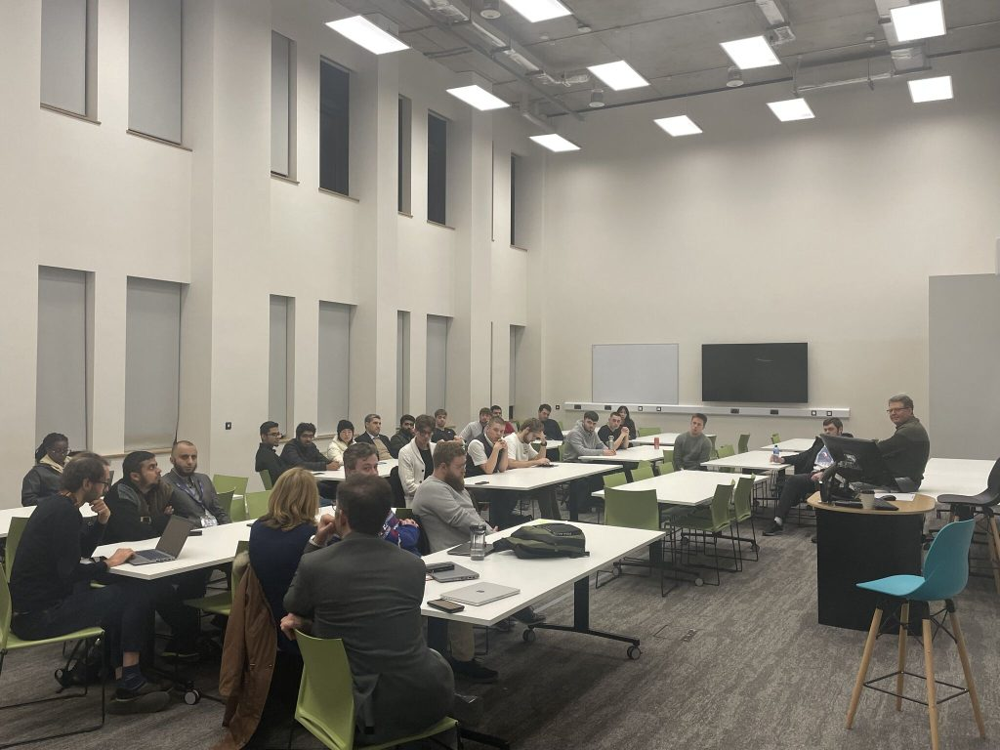</figure>


<figure class="wp-block-image size-large">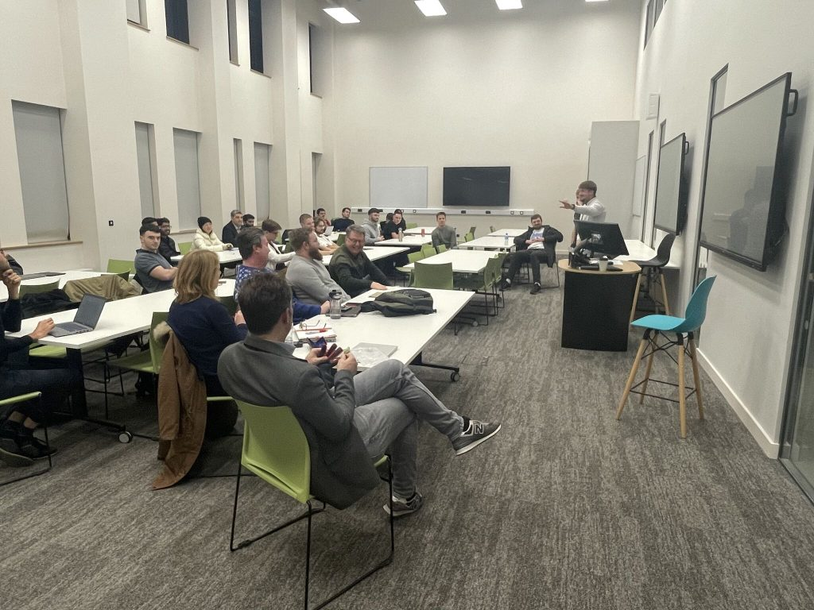</figure>


<figure class="wp-block-image size-large">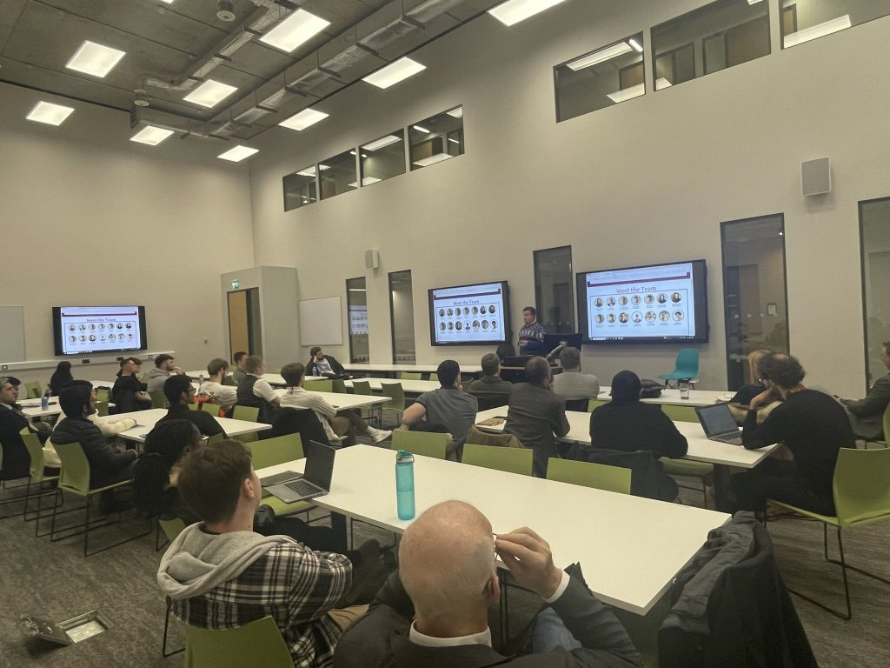</figure>
</figure>
]]></content:encoded>
					
		
		
			</item>
	</channel>
</rss>
